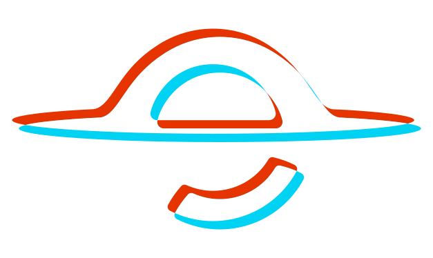

↗
↗

SingularUn Company Brain que conecta tus sistemas y trabaja por vos.
Procesos en cabezas, datos en silos, herramientas que no se hablan. El equipo repite trabajo manual y la información se pierde entre apps.
Horas en tareas que se podrían automatizar.
Cada sistema con su propia verdad parcial.
El know-how se va con cada persona.
Integramos tus sistemas y datos sin reemplazar tu stack.
Los agentes aprenden tus procesos, con permisos por rol.
Resultados medibles desde la primera semana.
de tiempo en tareas repetitivas en el primer trimestre.
Arrancamos con un piloto de 30 días sobre un proceso real. Sin reemplazar tu stack.